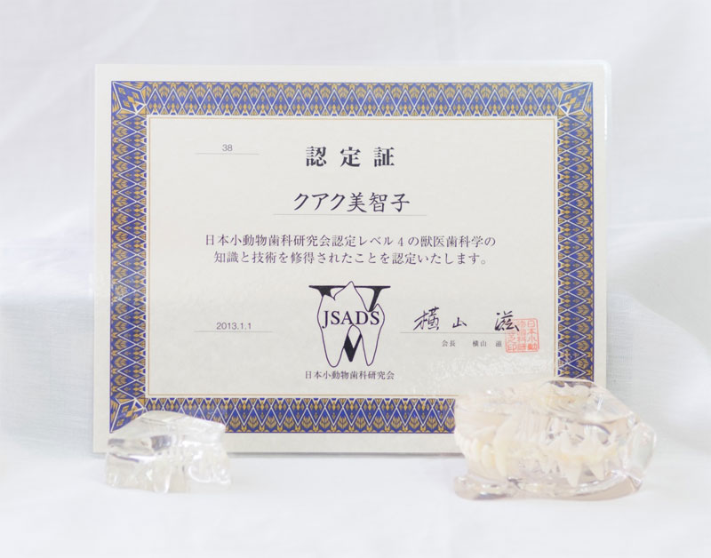

ご挨拶
Our Petsとは、
Our ：わたしたちの
P = People & Pets：人とペットのために
e = Everybody & Everything：みんな全てにおいての
ts = treats：治癒を目的とし、
ペットにとって身体に優しい負担の少ない治療を目指します。
私自身、犬と猫の飼主の一人でもあります。犬はミニチュアダックスフントで右前肢に麻痺があります。猫はスコティッシュフォールド、普通のキャットフードでは対応できず、下痢を起こしてしまう子です。２匹とも今はとても元気に暮らしています。犬はマッサージと鍼灸による定期的なメンテナンスで維持しています。猫は、完全な食事療法（手作り食）により下痢がおさまり生き生きと暮らしております。食事療法がいかに重要か、定期的なメンテナンスが病気の予防につながるのかを自分の子達（犬・猫ですが・・・）で痛感しております。
大学卒業後、臨床獣医師として動物病院に勤務してまいりました。臨床現場では、西洋医学の診療技術を学び、当たり前のように診断、治療をしておりました。しかしながら、臨床に携わっていくうちに西洋医学の治療では、どうにもこうにも治らない症例を目の当たりにしてきました。
西洋医学による治療でモヤモヤしながら、育休中に飼っている犬が急性膵炎にかかってしまいました。嘔吐して食べられなくなり始めた子に獣医師として家では何もしてあげられない不甲斐なさを実感。改めて飼い主目線でペットを見ました。“なんとか食べて欲しい”という思い。でもドッグフードは食べません。では、病気の時に作ってあげられる良い食事はないだろうか・・・『食』について考え栄養学を学び始めました。
急性膵炎に罹ってしまった子は、西洋医学による治療で一命を取り留めました。その後の２か月は肝臓、膵臓のケア。はじめはいわゆる大手メーカーの療法食を使用していましたが、少しずつ手作り食を取り入れました。西洋医学による即効性のある治療、その後は中医学による養生でとても元気に過ごしております。
食事療法（手作り食）は飼主がペットにやってあげられる最高の治療でもあります。西洋医学側面の栄養学とともに、中医学側面の薬膳についても学びましたが、手作り食の効果は一目瞭然です。目の輝きが変わります。
『中西結合医療』とは？
『中西結合医療』とは、西洋医学としての利点、中医学の利点を生かしつつ相互の欠点を補う医療です。例えば、西洋医学で使うような抗生剤は即効性があります。しかし、即効性を利用して治ったように見えてもまた再発することはよくあります。なぜ再発するのか？それはその子の食べている食事、住んでいる環境、体質など様々な要因が関係しています。
そのような様々要因も考慮して全体的に捉えることで中医学のアプローチが役立ちます。
“整体観：生き物は自然の一部であり生き物の体内にも自然界と同じ構造がある” という考えを重視した動物の本来持つ生命エネルギーを高め生産性を高める療法である中獣医学の概念です。
その個体にとって最適な予防法や治療法を四診(望診・聞診・問診・切診)により弁証論治にて導きます。したがって、中医学で用いる漢方にしても個体によって全く異なります。
中獣医学を学び始め、実際に西洋医学的診断、中医学的診断から全体的に判断して、ペットそれぞれに合わせた中西結合医療を提案させていただいています。このような診断と治療を実践していく中で飼い主様より納得のいただける治療ができているというお声をいただいております。
当院では、中医学、西洋医学を統合させ、その子その子の臨床症状や検査結果、飼育環境、精神状態など総合的に判断し適切な治療を提案させていただきます。
-
Our Petsどうぶつ診療所
〒464-0044 愛知県名古屋市千種区自由ヶ丘1-5-9
(診療施設はありません) 院長 クアク美智子 獣医歯科レベル認定4 | 日本小動物歯科研究会認定 心エコー研修終了 | 関西ハート動物センター 鍼灸アドバンスコース研修終了 | 比較統合医療学会 栄養学セミナー基礎編・実践編研修終了 | 比較統合医療学会 中獣医鍼灸師 | 国際中獣医学院日本校認定 - 経歴
- 愛知県立千種高等学校卒業
- 千葉大学園芸学部園芸経済学科卒業
- 大阪府立大学農学部獣医学科卒業
- 名古屋市内動物病院にて６年勤務
- 岡崎市動物病院にて２年勤務後、同病院にて非常勤勤務
- 国際中獣医学院日本校インストラクター獣医師
- 資格
- メディカルアロマセラピスト | 日本メディカルアロマテラピー協会認定
- ペットメディカルアロマセラピスト | 日本メディカルアロマテラピー協会動物臨床部会認定
- ペットマッサージセラピスト | 日本ペットマッサージ協会認定
- ペット薬膳管理士 | ペット薬膳国際協会認定
- 動物刮痧養生士 | 刮痧(グアシャ)国際協会動物施術部会認定
-



- 所属学会
- 日本小動物歯科研究会
- 日本ペット中医学研究会
- 比較統合医療学会
- 日本ホモトキシコロジー協会